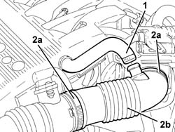

1048A34 sleeve(s) from flow meter to air supply capacity case - r + r
- Path
- Procedures > 10 ENGINE > 1048 ENGINE AIR SUPPLY CIRCUIT > 1048A vacuum air circuit > 1048A34 sleeve(s) from flow meter to air supply capacity case - r + r
- Kind
- repair procedure (removal / refitting; the operation number is the code)
- Applies to
- engines: 1.6 TS, 2.0 TS; all production periods
- Interactive page
- https://sloeber94.github.io/elrnDB-a147/en/#/3024826
Applies to: engines: 1.6 TS; all production periods
 Removing
Removing
 Refitting
Refitting1. Disconnect the oil vapour recovery pipe from the hose from the flowmeter to the air chamber.
2. Loosen the bands (2a) and remove the hose from the flow meter to the air chamber (2b).

Applies to: engines: 1.6 TS; all production periods
Refitting
RemovingRefit in its seating the rigid hose from the flow meter to the air chamber complete with hoses, and tighten the bands.
Connect the oil vapour recovery pipe to the hose from the flow meter to the air chamber.
Applies to: engines: 2.0 TS; all production periods
Removing
Refitting1. Disconnect the oil vapour recovery pipe from the hose from the flowmeter to the air chamber.
2. Loosen the bands (2a) and remove the hose from the flow meter to the air chamber (2b).
Applies to: engines: 2.0 TS; all production periods
Refitting
RemovingRefit the hose from the flow meter to the air chamber and secure with bands.
Connect the oil vapour recovery pipe to the hose from the flow meter to the air chamber.
Topics that link to this page (17)
- 1056B17 throttle body intergral with dvl - r r
- 1056B87 ignition/injection system control unit mount - r r
- 3330D11 brake servo - r r including seperation from master cylinder - facia lining removed for rhd version
- 5040A64 pipe from evaporator to dehydrating filter/accumulator - r+r
- 5040A80 expansion/connection pipe - r r
- 5040B30 expansion valve (tube orifice) - r+r
- 5040C10 air conditioner box - r+r
- 5040C15 air conditioner housing - r r with facia disconnected for versions with passenger airbag
- 5040C50 air conditioner heater radiator - r+r
- 5040C64 a/c evaporator - r+r
- 5040D84 air conditioner left hand air mixer flap control motor - r r
- 5040D90 air conditioner system wiring bundle - r r
- 5505C28 intergrated engine bay and abs system wiring - r r
- 5505C34 intergrated instrument under facia front air bag wiring - r r
- 5530A82 LEAD BETWEEN STARTER MOTOR AND ALTERNATOR - R.R.
- 5530B26 lead between battery and starter motor - r+r
- 7040A97 facia trim support beam - r r